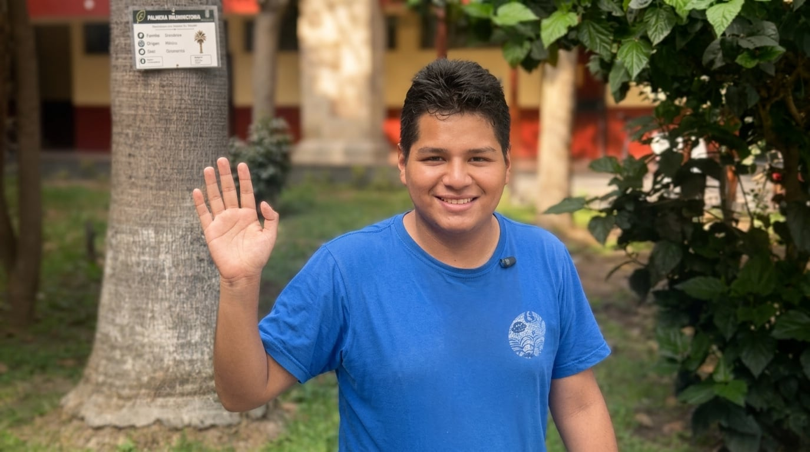

La Tirania del tiempo
Siete horas de centro de llamadas, seis de teoría y hora y media de autobús: la rutina de Andrés, que trabaja y estudia al mismo tiempo, y el precio de los días que no alcanzan.

A las 7:50 de la mañana, la luz sobre el Centro de Lima no calienta, rebota fría en los cristales sucios de la avenida Nicolás de Piérola. En el piso siete de una torre gris, decenas de cabezas permanecen alineadas frente a monitores opacos. Huele a café instantáneo, a plástico caliente y al encierro añejo de una alfombra sin ventilación. Andrés tiene 27 años y una corona negra ajustada a las orejas. Con la mano izquierda acomoda el cable y con la derecha tipea su código en el teclado borroso. Marca su ingreso exacto a las 8:00 a.m.
“Buenos días, le saluda Andrés, ¿en qué le puedo servir hoy?”, repite con tono ensayado.
Al otro lado del cable, un usuario grita por una tarifa mal cobrada. Andrés no se inmuta. En la pantalla, un temporizador en rojo mide los segundos de la llamada: 180, 181, 182... El sistema no perdona el exceso de conversación; mide el tiempo como agua en la sequía.
El turno es una maratón de siete horas. A las 2:50 p.m., mientras atiende una última llamada, empieza a guardar sus pertenencias en la mochila con una sola mano. A las 3:00 p.m. en punto se desengancha la diadema y corre a los ascensores. Sus clases en la Universidad Nacional Federico Villarreal (UNFV) empiezan a esa misma hora.
Salir a las tres significa arrojarse sobre la marea de gente en el Parque Universitario. Andrés camina apurado, esquivando ambulantes y cobradores de cúster. Pasa en minutos del ambiente helado de la oficina al rugido de motores de la calle. Se quita el fotocheck en el trayecto y sube las escaleras de la facultad de dos en dos. Sus ojeras no son sombras pasajeras; son surcos violetas labrados tras tres años de vivir a marchas forzadas.
Entra al salón a las 3:15 p.m. y busca una carpeta al fondo. Para las cinco de la tarde, el aire se vuelve pesado. El profesor expone sobre marcos teóricos, pero su voz se convierte en un murmullo distante. Andrés apoya el codo en la carpeta y sostiene su mentón. Los párpados le pesan como plomo. Da un cabeceo involuntario que lo despierta de golpe. Toma el lapicero asustado y traza un garabato incoherente sobre el cuaderno.
“Llegas de la chamba tras escuchar a setenta personas quejarse y te sientas a recibir seis horas de teoría. A veces el cerebro simplemente se te apaga” susurra en el receso.
A las nueve de la noche, las luces de la facultad se apagan y Andrés camina solo hacia el paradero. Le espera hora y media de viaje hasta Villa Maria del Triunfo. En el autobús nocturno, se abraza la mochila al pecho y apoya la frente en el vidrio helado, mientras se pregunta: ¿Y si dejo la chamba? ¿Y si dejo la universidad?, junto al último suspiro el microbús arranca, da un frenazo y se pierde en la penumbra. Adentro, Andrés cierra los ojos para regalarse un momento de sueño antes de volver a empezar.